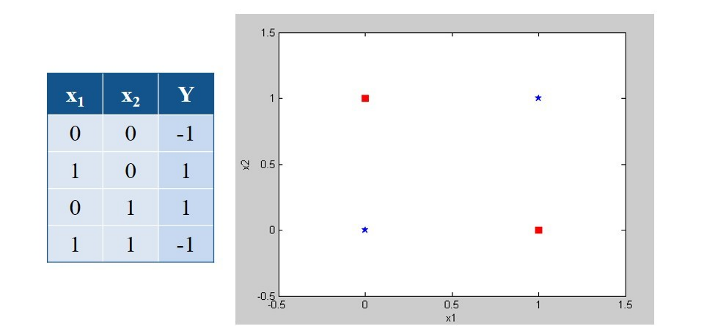
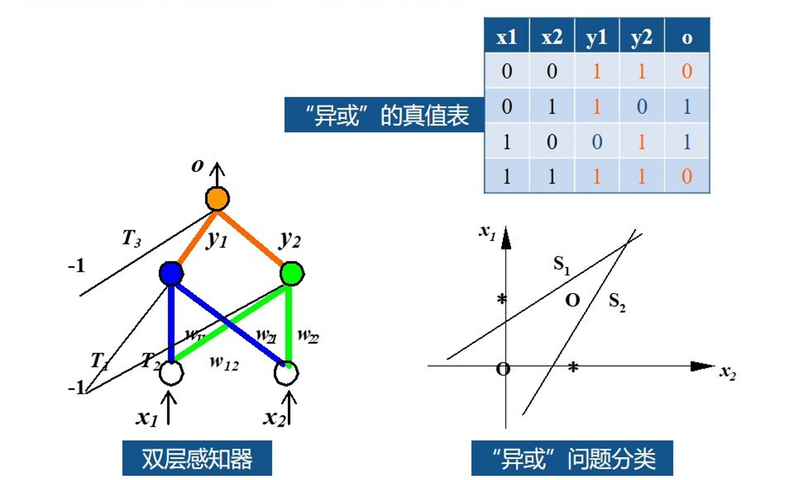
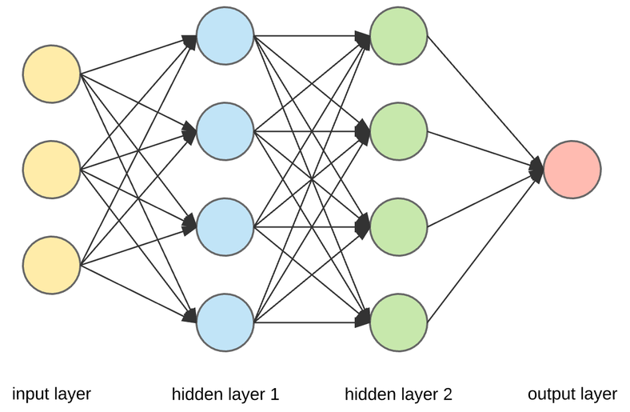
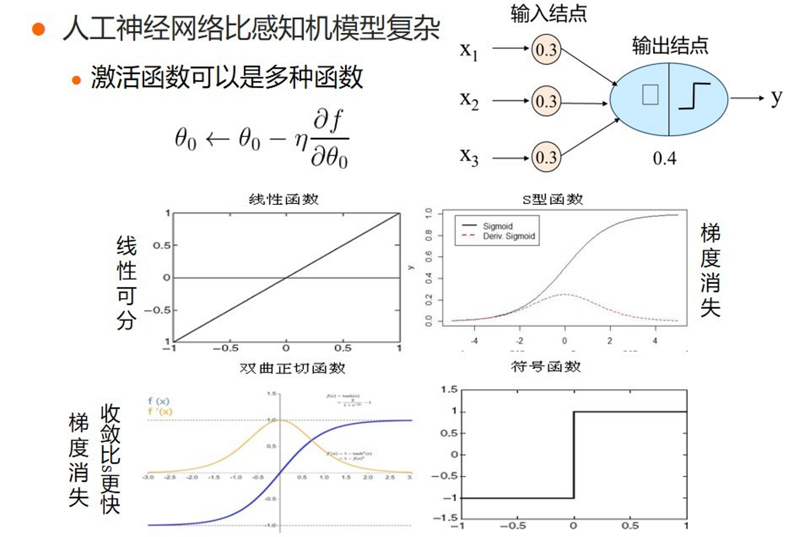
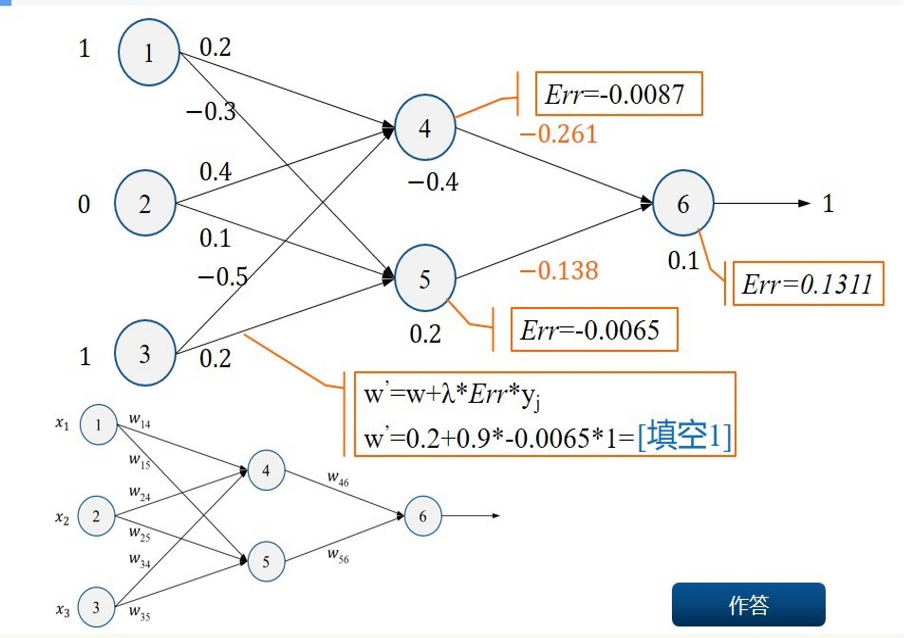
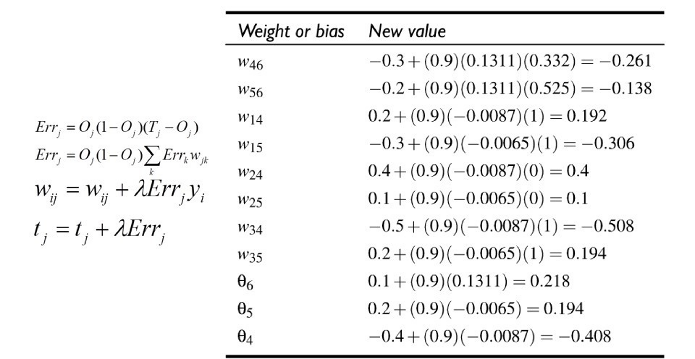

Artificial Neural Networks
Contents
Artificial Neural Networks¶
For nonlinear problems¶

setup
---------------------------------------------------------------------------
NameError Traceback (most recent call last)
<ipython-input-1-da041fe15ae9> in <module>
----> 1 setup
NameError: name 'setup' is not defined
import platform
print(f"Python version: {platform.python_version()}")
assert platform.python_version_tuple() >= ("3", "6")
import numpy as np
import matplotlib
import matplotlib.pyplot as plt
from matplotlib.colors import ListedColormap
import seaborn as sns
import pandas as pd
print(f"NumPy version: {np.__version__}")
# Setup plots
%matplotlib inline
plt.rcParams["figure.figsize"] = 10, 8
%config InlineBackend.figure_format = 'retina'
sns.set()
import torch
print(f"pytorch version: {torch.__version__}")
Python version: 3.7.11
NumPy version: 1.21.5
pytorch version: 1.11.0+cpu
# Utility functions
def plot_planar_data(X, y):
"""Plot some 2D data"""
plt.figure()
plt.plot(X[y == 0, 0], X[y == 0, 1], "or", alpha=0.5, label=0)
plt.plot(X[y == 1, 0], X[y == 1, 1], "ob", alpha=0.5, label=1)
plt.legend()
def plot_decision_boundary(pred_func, X, y, figure=None):
"""Plot a decision boundary"""
if figure is None: # If no figure is given, create a new one
plt.figure()
# Set min and max values and give it some padding
x_min, x_max = X[:, 0].min() - 0.5, X[:, 0].max() + 0.5
y_min, y_max = X[:, 1].min() - 0.5, X[:, 1].max() + 0.5
h = 0.01
# Generate a grid of points with distance h between them
xx, yy = np.meshgrid(np.arange(x_min, x_max, h), np.arange(y_min, y_max, h))
# Predict the function value for the whole grid
Z = pred_func(np.c_[xx.ravel(), yy.ravel()])
Z = Z.reshape(xx.shape)
# Plot the contour and training examples
plt.contourf(xx, yy, Z, cmap=plt.cm.Spectral)
cm_bright = ListedColormap(["#FF0000", "#0000FF"])
plt.scatter(X[:, 0], X[:, 1], c=y, cmap=cm_bright)
def plot_loss_acc(history):
"""Plot training and (optionally) validation loss and accuracy
Takes a Keras History object as parameter"""
loss = history.history["loss"]
epochs = range(1, len(loss) + 1)
plt.figure(figsize=(10, 10))
plt.subplot(2, 1, 1)
plt.plot(epochs, loss, ".--", label="Training loss")
final_loss = loss[-1]
title = "Training loss: {:.4f}".format(final_loss)
plt.ylabel("Loss")
if "val_loss" in history.history:
val_loss = history.history["val_loss"]
plt.plot(epochs, val_loss, "o-", label="Validation loss")
final_val_loss = val_loss[-1]
title += ", Validation loss: {:.4f}".format(final_val_loss)
plt.title(title)
plt.legend()
acc = history.history["accuracy"]
plt.subplot(2, 1, 2)
plt.plot(epochs, acc, ".--", label="Training acc")
final_acc = acc[-1]
title = "Training accuracy: {:.2f}%".format(final_acc * 100)
plt.xlabel("Epochs")
plt.ylabel("Accuracy")
if "val_accuracy" in history.history:
val_acc = history.history["val_accuracy"]
plt.plot(epochs, val_acc, "o-", label="Validation acc")
final_val_acc = val_acc[-1]
title += ", Validation accuracy: {:.2f}%".format(final_val_acc * 100)
plt.title(title)
plt.legend()
## History
History¶
A biological inspiration¶

McCulloch & Pitts’ formal neuron (1943)¶

Hebb’s rule (1949)¶
Attempt to explain synaptic plasticity, the adaptation of brain neurons during the learning process.
“The general idea is an old one, that any two cells or systems of cells that are repeatedly active at the same time will tend to become ‘associated’ so that activity in one facilitates activity in the other.”
Franck Rosenblatt’s perceptron (1958)¶

The perceptron learning algorithm¶
Init randomly the \(\theta\) connection weights.
For each training sample \(x^{(i)}\):
Compute the perceptron output \(y'^{(i)}\)
Adjust weights : \(\theta_{next} = \theta + \eta (y^{(i)} - y'^{(i)}) x^{(i)}\)

Minsky’s critic (1969)¶
One perceptron cannot learn non-linearly separable functions.

At the time, no learning algorithm existed for training the hidden layers of a MLP.


Decisive breakthroughs (1970s-1990s)¶
1974: backpropagation theory (P. Werbos).
1986: learning through backpropagation (Rumelhart, Hinton, Williams).
1991: universal approximation theorem (Hornik, Stinchcombe, White).
1989: first researchs on deep neural nets (LeCun, Bengio).
Anatomy of a network¶

Neuron output¶

Activation functions¶
Applied to the weighted sum of neuron inputs to produce its output.
Always non-linear. If not, the whole network could only apply a linear transformation to its inputs and couldn’t solve complex problems.
The main ones are:
sigmoid (logistic function)
tanh (hyberbolic tangent)
ReLU (Rectified Linear Unit)
See Activation functions for details. 
Single neuron classifier¶
Equivalent to logistic regression.
Single layer multiclass classifier¶
Equivalent to softmax regression.
Universal approximation theorem (1991)¶
The hidden layers of a neural network transform their input space.
A network can be seen as a series of non-linear compositions applied to the input data.
Given appropriate complexity and appropriate learning, a network can theorically approximate any continuous function.
One of the most important theoretical results for neural networks.


Weights initialization¶
To facilitate training, initial weights must be:
non-zero
random
have small values
Several techniques exist. A commonly used one is Xavier initialization.

Backpropagation¶
Objective: compute \(\nabla_{\boldsymbol{\theta}}\mathcal{L}(\boldsymbol{\theta})\), the loss function gradient w.r.t. all the network weights.
Method: apply the chain rule to compute partial derivatives backwards, starting from the current output.


INTRODUCTION¶
It’s a Python based scientific computing package targeted at two sets of audiences:
A replacement for NumPy to use the power of GPUs
Deep learning research platform that provides maximum flexibility and speed
pros:
Interactively debugging PyTorch. Many users who have used both frameworks would argue that makes pytorch significantly easier to debug and visualize.
Clean support for dynamic graphs
Organizational backing from Facebook
Blend of high level and low level APIs
cons:
Much less mature than alternatives
Limited references / resources outside of the official documentation
I accept you know neural network basics. If you do not know check my tutorial. Because I will not explain neural network concepts detailed, I only explain how to use pytorch for neural network
Neural Network tutorial: https://www.kaggle.com/kanncaa1/deep-learning-tutorial-for-beginners
The most important parts of this tutorial from matrices to ANN. If you learn these parts very well, implementing remaining parts like CNN or RNN will be very easy.
Content:
-
Matrices
Math
Variable
Recurrent Neural Network (RNN)
Long-Short Term Memory (LSTM)
# This Python 3 environment comes with many helpful analytics libraries installed
# It is defined by the kaggle/python docker image: https://github.com/kaggle/docker-python
# For example, here's several helpful packages to load in
import numpy as np # linear algebra
import pandas as pd # data processing, CSV file I/O (e.g. pd.read_csv)
import matplotlib.pyplot as plt
# Input data files are available in the "../input/" directory.
# For example, running this (by clicking run or pressing Shift+Enter) will list the files in the input directory
import os
print(os.listdir("./data"))
# Any results you write to the current directory are saved as output.
['iris', 'svm.jpeg', 'titanic_train.csv']
Basics of Pytorch¶
Matrices¶
In pytorch, matrix(array) is called tensors.
3*3 matrix koy. This is 3x3 tensor.
Lets look at array example with numpy that we already know.
We create numpy array with np.numpy() method
Type(): type of the array. In this example it is numpy
np.shape(): shape of the array. Row x Column
# import numpy library
import numpy as np
# numpy array
array = [[1,2,3],[4,5,6]]
first_array = np.array(array) # 2x3 array
print("Array Type: {}".format(type(first_array))) # type
print("Array Shape: {}".format(np.shape(first_array))) # shape
print(first_array)
Array Type: <class 'numpy.ndarray'>
Array Shape: (2, 3)
[[1 2 3]
[4 5 6]]
We looked at numpy array.
Now examine how we implement tensor(pytorch array)
import pytorch library with import torch
We create tensor with torch.Tensor() method
type: type of the array. In this example it is tensor
shape: shape of the array. Row x Column
# import pytorch library
import torch
# pytorch array
tensor = torch.Tensor(array)
print("Array Type: {}".format(tensor.type)) # type
print("Array Shape: {}".format(tensor.shape)) # shape
print(tensor)
Array Type: <built-in method type of Tensor object at 0x000001E105754408>
Array Shape: torch.Size([2, 3])
tensor([[1., 2., 3.],
[4., 5., 6.]])
Allocation is one of the most used technique in coding. Therefore lets learn how to make it with pytorch.
In order to learn, compare numpy and tensor
np.ones() = torch.ones()
np.random.rand() = torch.rand()
# numpy ones
print("Numpy {}\n".format(np.ones((2,3))))
# pytorch ones
print(torch.ones((2,3)))
# numpy random
print("Numpy {}\n".format(np.random.rand(2,3)))
# pytorch random
print(torch.rand(2,3))
Numpy [[1. 1. 1.]
[1. 1. 1.]]
tensor([[1., 1., 1.],
[1., 1., 1.]])
Numpy [[0.71906628 0.75122874 0.46073038]
[0.07985004 0.86760214 0.88665102]]
tensor([[0.7781, 0.3178, 0.7480],
[0.4609, 0.2787, 0.0737]])
Even if when I use pytorch for neural networks, I feel better if I use numpy. Therefore, usually convert result of neural network that is tensor to numpy array to visualize or examine.
Lets look at conversion between tensor and numpy arrays.
torch.from_numpy(): from numpy to tensor
numpy(): from tensor to numpy
random numpy array¶
array = np.random.rand(2,2) print(“{} {}\n”.format(type(array),array))
from numpy to tensor¶
from_numpy_to_tensor = torch.from_numpy(array) print(“{}\n”.format(from_numpy_to_tensor))
from tensor to numpy¶
tensor = from_numpy_to_tensor from_tensor_to_numpy = tensor.numpy() print(“{} {}\n”.format(type(from_tensor_to_numpy),from_tensor_to_numpy))
Basic Math with Pytorch¶
Resize: view()
a and b are tensor.
Addition: torch.add(a,b) = a + b
Subtraction: a.sub(b) = a - b
Element wise multiplication: torch.mul(a,b) = a * b
Element wise division: torch.div(a,b) = a / b
Mean: a.mean()
Standart Deviation (std): a.std()
# create tensor
tensor = torch.ones(3,3)
print("\n",tensor)
# Resize
print("{}{}\n".format(tensor.view(9).shape,tensor.view(9)))
# Addition
print("Addition: {}\n".format(torch.add(tensor,tensor)))
# Subtraction
print("Subtraction: {}\n".format(tensor.sub(tensor)))
# Element wise multiplication
print("Element wise multiplication: {}\n".format(torch.mul(tensor,tensor)))
# Element wise division
print("Element wise division: {}\n".format(torch.div(tensor,tensor)))
# Mean
tensor = torch.Tensor([1,2,3,4,5])
print("Mean: {}".format(tensor.mean()))
# Standart deviation (std)
print("std: {}".format(tensor.std()))
Variables¶
It accumulates gradients.
We will use pytorch in neural network. And as you know, in neural network we have backpropagation where gradients are calculated. Therefore we need to handle gradients. If you do not know neural network, check my deep learning tutorial first because I will not explain detailed the concepts like optimization, loss function or backpropagation.
Deep learning tutorial: https://www.kaggle.com/kanncaa1/deep-learning-tutorial-for-beginners
Difference between variables and tensor is variable accumulates gradients.
We can make math operations with variables, too.
In order to make backward propagation we need variables
# import variable from pytorch library
from torch.autograd import Variable
# define variable
var = Variable(torch.ones(3), requires_grad = True)
var
- Assume we have equation y = x^2
- Define x = [2,4] variable
- After calculation we find that y = [4,16] (y = x^2)
- Recap o equation is that o = (1/2)*sum(y) = (1/2)*sum(x^2)
- deriavative of o = x
- Result is equal to x so gradients are [2,4]
- Lets implement
# lets make basic backward propagation
# we have an equation that is y = x^2
array = [2,4]
tensor = torch.Tensor(array)
x = Variable(tensor, requires_grad = True)
y = x**2
print(" y = ",y)
# recap o equation o = 1/2*sum(y)
o = (1/2)*sum(y)
print(" o = ",o)
# backward
o.backward() # calculates gradients
# As I defined, variables accumulates gradients. In this part there is only one variable x.
# Therefore variable x should be have gradients
# Lets look at gradients with x.grad
print("gradients: ",x.grad)
Linear Regression¶
Detailed linear regression tutorial is in my machine learning tutorial in part “Regression”. I will not explain it in here detailed.
Linear Regression tutorial: https://www.kaggle.com/kanncaa1/machine-learning-tutorial-for-beginners
y = Ax + B.
A = slope of curve
B = bias (point that intersect y-axis)
For example, we have car company. If the car price is low, we sell more car. If the car price is high, we sell less car. This is the fact that we know and we have data set about this fact.
The question is that what will be number of car sell if the car price is 100.
# As a car company we collect this data from previous selling
# lets define car prices
car_prices_array = [3,4,5,6,7,8,9]
car_price_np = np.array(car_prices_array,dtype=np.float32)
car_price_np = car_price_np.reshape(-1,1)
car_price_tensor = Variable(torch.from_numpy(car_price_np))
# lets define number of car sell
number_of_car_sell_array = [ 7.5, 7, 6.5, 6.0, 5.5, 5.0, 4.5]
number_of_car_sell_np = np.array(number_of_car_sell_array,dtype=np.float32)
number_of_car_sell_np = number_of_car_sell_np.reshape(-1,1)
number_of_car_sell_tensor = Variable(torch.from_numpy(number_of_car_sell_np))
# lets visualize our data
import matplotlib.pyplot as plt
plt.scatter(car_prices_array,number_of_car_sell_array)
plt.xlabel("Car Price $")
plt.ylabel("Number of Car Sell")
plt.title("Car Price$ VS Number of Car Sell")
plt.show()
- Now this plot is our collected data
- We have a question that is what will be number of car sell if the car price is 100$
- In order to solve this question we need to use linear regression.
- We need to line fit into this data. Aim is fitting line with minimum error.
- **Steps of Linear Regression**
1. create LinearRegression class
1. define model from this LinearRegression class
1. MSE: Mean squared error
1. Optimization (SGD:stochastic gradient descent)
1. Backpropagation
1. Prediction
- Lets implement it with Pytorch
# Linear Regression with Pytorch
# libraries
import torch
from torch.autograd import Variable
import torch.nn as nn
import warnings
warnings.filterwarnings("ignore")
# create class
class LinearRegression(nn.Module):
def __init__(self,input_size,output_size):
# super function. It inherits from nn.Module and we can access everythink in nn.Module
super(LinearRegression,self).__init__()
# Linear function.
self.linear = nn.Linear(input_dim,output_dim)
def forward(self,x):
return self.linear(x)
# define model
input_dim = 1
output_dim = 1
model = LinearRegression(input_dim,output_dim) # input and output size are 1
# MSE
mse = nn.MSELoss()
# Optimization (find parameters that minimize error)
learning_rate = 0.02 # how fast we reach best parameters
optimizer = torch.optim.SGD(model.parameters(),lr = learning_rate)
# train model
loss_list = []
iteration_number = 1001
for iteration in range(iteration_number):
# optimization
optimizer.zero_grad()
# Forward to get output
results = model(car_price_tensor)
# Calculate Loss
loss = mse(results, number_of_car_sell_tensor)
# backward propagation
loss.backward()
# Updating parameters
optimizer.step()
# store loss
loss_list.append(loss.data)
# print loss
if(iteration % 50 == 0):
print('epoch {}, loss {}'.format(iteration, loss.data))
plt.plot(range(iteration_number),loss_list)
plt.xlabel("Number of Iterations")
plt.ylabel("Loss")
plt.show()
- Number of iteration is 1001.
- Loss is almost zero that you can see from plot or loss in epoch number 1000.
- Now we have a trained model.
- While usign trained model, lets predict car prices.
# predict our car price
predicted = model(car_price_tensor).data.numpy()
plt.scatter(car_prices_array,number_of_car_sell_array,label = "original data",color ="red")
plt.scatter(car_prices_array,predicted,label = "predicted data",color ="blue")
# predict if car price is 10$, what will be the number of car sell
#predicted_10 = model(torch.from_numpy(np.array([10]))).data.numpy()
#plt.scatter(10,predicted_10.data,label = "car price 10$",color ="green")
plt.legend()
plt.xlabel("Car Price $")
plt.ylabel("Number of Car Sell")
plt.title("Original vs Predicted values")
plt.show()
Logistic Regression¶
Linear regression is not good at classification.
We use logistic regression for classification.
linear regression + logistic function(softmax) = logistic regression
Check my deep learning tutorial. There is detailed explanation of logistic regression.
Steps of Logistic Regression
Import Libraries
Prepare Dataset
We use MNIST dataset.
There are 28*28 images and 10 labels from 0 to 9
Data is not normalized so we divide each image to 255 that is basic normalization for images.
In order to split data, we use train_test_split method from sklearn library
Size of train data is 80% and size of test data is 20%.
Create feature and target tensors. At the next parts we create variable from these tensors. As you remember we need to define variable for accumulation of gradients.
batch_size = batch size means is that for example we have data and it includes 1000 sample. We can train 1000 sample in a same time or we can divide it 10 groups which include 100 sample and train 10 groups in order. Batch size is the group size. For example, I choose batch_size = 100, that means in order to train all data only once we have 336 groups. We train each groups(336) that have batch_size(quota) 100. Finally we train 33600 sample one time.
epoch: 1 epoch means training all samples one time.
In our example: we have 33600 sample to train and we decide our batch_size is 100. Also we decide epoch is 29(accuracy achieves almost highest value when epoch is 29). Data is trained 29 times. Question is that how many iteration do I need? Lets calculate:
training data 1 times = training 33600 sample (because data includes 33600 sample)
But we split our data 336 groups(group_size = batch_size = 100) our data
Therefore, 1 epoch(training data only once) takes 336 iteration
We have 29 epoch, so total iterarion is 9744(that is almost 10000 which I used)
TensorDataset(): Data set wrapping tensors. Each sample is retrieved by indexing tensors along the first dimension.
DataLoader(): It combines dataset and sample. It also provides multi process iterators over the dataset.
Visualize one of the images in dataset
Create Logistic Regression Model
Same with linear regression.
However as you expect, there should be logistic function in model right?
In pytorch, logistic function is in the loss function where we will use at next parts.
Instantiate Model
input_dim = 2828 # size of image pxpx
output_dim = 10 # labels 0,1,2,3,4,5,6,7,8,9
create model
Instantiate Loss
Cross entropy loss
It calculates loss that is not surprise :)
It also has softmax(logistic function) in it.
Instantiate Optimizer
SGD Optimizer
Traning the Model
Prediction
As a result, as you can see from plot, while loss decreasing, accuracy(almost 85%) is increasing and our model is learning(training).
# Import Libraries
import torch
import torch.nn as nn
from torch.autograd import Variable
from torch.utils.data import DataLoader
import pandas as pd
from sklearn.model_selection import train_test_split
# Prepare Dataset
# load data
train = pd.read_csv(r"../input/train.csv",dtype = np.float32)
# split data into features(pixels) and labels(numbers from 0 to 9)
targets_numpy = train.label.values
features_numpy = train.loc[:,train.columns != "label"].values/255 # normalization
# train test split. Size of train data is 80% and size of test data is 20%.
features_train, features_test, targets_train, targets_test = train_test_split(features_numpy,
targets_numpy,
test_size = 0.2,
random_state = 42)
# create feature and targets tensor for train set. As you remember we need variable to accumulate gradients. Therefore first we create tensor, then we will create variable
featuresTrain = torch.from_numpy(features_train)
targetsTrain = torch.from_numpy(targets_train).type(torch.LongTensor) # data type is long
# create feature and targets tensor for test set.
featuresTest = torch.from_numpy(features_test)
targetsTest = torch.from_numpy(targets_test).type(torch.LongTensor) # data type is long
# batch_size, epoch and iteration
batch_size = 100
n_iters = 10000
num_epochs = n_iters / (len(features_train) / batch_size)
num_epochs = int(num_epochs)
# Pytorch train and test sets
train = torch.utils.data.TensorDataset(featuresTrain,targetsTrain)
test = torch.utils.data.TensorDataset(featuresTest,targetsTest)
# data loader
train_loader = DataLoader(train, batch_size = batch_size, shuffle = False)
test_loader = DataLoader(test, batch_size = batch_size, shuffle = False)
# visualize one of the images in data set
plt.imshow(features_numpy[10].reshape(28,28))
plt.axis("off")
plt.title(str(targets_numpy[10]))
plt.savefig('graph.png')
plt.show()
# Create Logistic Regression Model
class LogisticRegressionModel(nn.Module):
def __init__(self, input_dim, output_dim):
super(LogisticRegressionModel, self).__init__()
# Linear part
self.linear = nn.Linear(input_dim, output_dim)
# There should be logistic function right?
# However logistic function in pytorch is in loss function
# So actually we do not forget to put it, it is only at next parts
def forward(self, x):
out = self.linear(x)
return out
# Instantiate Model Class
input_dim = 28*28 # size of image px*px
output_dim = 10 # labels 0,1,2,3,4,5,6,7,8,9
# create logistic regression model
model = LogisticRegressionModel(input_dim, output_dim)
# Cross Entropy Loss
error = nn.CrossEntropyLoss()
# SGD Optimizer
learning_rate = 0.001
optimizer = torch.optim.SGD(model.parameters(), lr=learning_rate)
# Traning the Model
count = 0
loss_list = []
iteration_list = []
for epoch in range(num_epochs):
for i, (images, labels) in enumerate(train_loader):
# Define variables
train = Variable(images.view(-1, 28*28))
labels = Variable(labels)
# Clear gradients
optimizer.zero_grad()
# Forward propagation
outputs = model(train)
# Calculate softmax and cross entropy loss
loss = error(outputs, labels)
# Calculate gradients
loss.backward()
# Update parameters
optimizer.step()
count += 1
# Prediction
if count % 50 == 0:
# Calculate Accuracy
correct = 0
total = 0
# Predict test dataset
for images, labels in test_loader:
test = Variable(images.view(-1, 28*28))
# Forward propagation
outputs = model(test)
# Get predictions from the maximum value
predicted = torch.max(outputs.data, 1)[1]
# Total number of labels
total += len(labels)
# Total correct predictions
correct += (predicted == labels).sum()
accuracy = 100 * correct / float(total)
# store loss and iteration
loss_list.append(loss.data)
iteration_list.append(count)
if count % 500 == 0:
# Print Loss
print('Iteration: {} Loss: {} Accuracy: {}%'.format(count, loss.data, accuracy))
# visualization
plt.plot(iteration_list,loss_list)
plt.xlabel("Number of iteration")
plt.ylabel("Loss")
plt.title("Logistic Regression: Loss vs Number of iteration")
plt.show()
Artificial Neural Network (ANN)¶
Logistic regression is good at classification but when complexity(non linearity) increases, the accuracy of model decreases.
Therefore, we need to increase complexity of model.
In order to increase complexity of model, we need to add more non linear functions as hidden layer.
I am saying again that if you do not know what is artificial neural network check my deep learning tutorial because I will not explain neural network detailed here, only explain pytorch.
Artificial Neural Network tutorial: https://www.kaggle.com/kanncaa1/deep-learning-tutorial-for-beginners
What we expect from artificial neural network is that when complexity increases, we use more hidden layers and our model can adapt better. As a result accuracy increase.
Steps of ANN:
Import Libraries
In order to show you, I import again but we actually imported them at previous parts.
Prepare Dataset
Totally same with previous part(logistic regression).
We use same dataset so we only need train_loader and test_loader.
We use same batch size, epoch and iteration numbers.
Create ANN Model
We add 3 hidden layers.
We use ReLU, Tanh and ELU activation functions for diversity.
Instantiate Model Class
input_dim = 2828 # size of image pxpx
output_dim = 10 # labels 0,1,2,3,4,5,6,7,8,9
Hidden layer dimension is 150. I only choose it as 150 there is no reason. Actually hidden layer dimension is hyperparameter and it should be chosen and tuned. You can try different values for hidden layer dimension and observe the results.
create model
Instantiate Loss
Cross entropy loss
It also has softmax(logistic function) in it.
Instantiate Optimizer
SGD Optimizer
Traning the Model
Prediction
As a result, as you can see from plot, while loss decreasing, accuracy is increasing and our model is learning(training).
Thanks to hidden layers model learnt better and accuracy(almost 95%) is better than accuracy of logistic regression model.
# Import Libraries
import torch
import torch.nn as nn
from torch.autograd import Variable
# Create ANN Model
class ANNModel(nn.Module):
def __init__(self, input_dim, hidden_dim, output_dim):
super(ANNModel, self).__init__()
# Linear function 1: 784 --> 150
self.fc1 = nn.Linear(input_dim, hidden_dim)
# Non-linearity 1
self.relu1 = nn.ReLU()
# Linear function 2: 150 --> 150
self.fc2 = nn.Linear(hidden_dim, hidden_dim)
# Non-linearity 2
self.tanh2 = nn.Tanh()
# Linear function 3: 150 --> 150
self.fc3 = nn.Linear(hidden_dim, hidden_dim)
# Non-linearity 3
self.elu3 = nn.ELU()
# Linear function 4 (readout): 150 --> 10
self.fc4 = nn.Linear(hidden_dim, output_dim)
def forward(self, x):
# Linear function 1
out = self.fc1(x)
# Non-linearity 1
out = self.relu1(out)
# Linear function 2
out = self.fc2(out)
# Non-linearity 2
out = self.tanh2(out)
# Linear function 2
out = self.fc3(out)
# Non-linearity 2
out = self.elu3(out)
# Linear function 4 (readout)
out = self.fc4(out)
return out
# instantiate ANN
input_dim = 28*28
hidden_dim = 150 #hidden layer dim is one of the hyper parameter and it should be chosen and tuned. For now I only say 150 there is no reason.
output_dim = 10
# Create ANN
model = ANNModel(input_dim, hidden_dim, output_dim)
# Cross Entropy Loss
error = nn.CrossEntropyLoss()
# SGD Optimizer
learning_rate = 0.02
optimizer = torch.optim.SGD(model.parameters(), lr=learning_rate)
# ANN model training
count = 0
loss_list = []
iteration_list = []
accuracy_list = []
for epoch in range(num_epochs):
for i, (images, labels) in enumerate(train_loader):
train = Variable(images.view(-1, 28*28))
labels = Variable(labels)
# Clear gradients
optimizer.zero_grad()
# Forward propagation
outputs = model(train)
# Calculate softmax and ross entropy loss
loss = error(outputs, labels)
# Calculating gradients
loss.backward()
# Update parameters
optimizer.step()
count += 1
if count % 50 == 0:
# Calculate Accuracy
correct = 0
total = 0
# Predict test dataset
for images, labels in test_loader:
test = Variable(images.view(-1, 28*28))
# Forward propagation
outputs = model(test)
# Get predictions from the maximum value
predicted = torch.max(outputs.data, 1)[1]
# Total number of labels
total += len(labels)
# Total correct predictions
correct += (predicted == labels).sum()
accuracy = 100 * correct / float(total)
# store loss and iteration
loss_list.append(loss.data)
iteration_list.append(count)
accuracy_list.append(accuracy)
if count % 500 == 0:
# Print Loss
print('Iteration: {} Loss: {} Accuracy: {} %'.format(count, loss.data, accuracy))
# visualization loss
plt.plot(iteration_list,loss_list)
plt.xlabel("Number of iteration")
plt.ylabel("Loss")
plt.title("ANN: Loss vs Number of iteration")
plt.show()
# visualization accuracy
plt.plot(iteration_list,accuracy_list,color = "red")
plt.xlabel("Number of iteration")
plt.ylabel("Accuracy")
plt.title("ANN: Accuracy vs Number of iteration")
plt.show()
<a id="5"></a> <br>
### Convolutional Neural Network (CNN)
- CNN is well adapted to classify images.
- You can learn CNN basics: https://www.kaggle.com/kanncaa1/convolutional-neural-network-cnn-tutorial
- **Steps of CNN:**
1. Import Libraries
1. Prepare Dataset
- Totally same with previous parts.
- We use same dataset so we only need train_loader and test_loader.
1. Convolutional layer:
- Create feature maps with filters(kernels).
- Padding: After applying filter, dimensions of original image decreases. However, we want to preserve as much as information about the original image. We can apply padding to increase dimension of feature map after convolutional layer.
- We use 2 convolutional layer.
- Number of feature map is out_channels = 16
- Filter(kernel) size is 5*5
1. Pooling layer:
- Prepares a condensed feature map from output of convolutional layer(feature map)
- 2 pooling layer that we will use max pooling.
- Pooling size is 2*2
1. Flattening: Flats the features map
1. Fully Connected Layer:
- Artificial Neural Network that we learnt at previous part.
- Or it can be only linear like logistic regression but at the end there is always softmax function.
- We will not use activation function in fully connected layer.
- You can think that our fully connected layer is logistic regression.
- We combine convolutional part and logistic regression to create our CNN model.
1. Instantiate Model Class
- create model
1. Instantiate Loss
- Cross entropy loss
- It also has softmax(logistic function) in it.
1. Instantiate Optimizer
- SGD Optimizer
1. Traning the Model
1. Prediction
- As a result, as you can see from plot, while loss decreasing, accuracy is increasing and our model is learning(training).
- Thanks to convolutional layer, model learnt better and accuracy(almost 98%) is better than accuracy of ANN. Actually while tuning hyperparameters, increase in iteration and expanding convolutional neural network can increase accuracy but it takes too much running time that we do not want at kaggle.
# Import Libraries
import torch
import torch.nn as nn
from torch.autograd import Variable
# Create CNN Model
class CNNModel(nn.Module):
def __init__(self):
super(CNNModel, self).__init__()
# Convolution 1
self.cnn1 = nn.Conv2d(in_channels=1, out_channels=16, kernel_size=5, stride=1, padding=0)
self.relu1 = nn.ReLU()
# Max pool 1
self.maxpool1 = nn.MaxPool2d(kernel_size=2)
# Convolution 2
self.cnn2 = nn.Conv2d(in_channels=16, out_channels=32, kernel_size=5, stride=1, padding=0)
self.relu2 = nn.ReLU()
# Max pool 2
self.maxpool2 = nn.MaxPool2d(kernel_size=2)
# Fully connected 1
self.fc1 = nn.Linear(32 * 4 * 4, 10)
def forward(self, x):
# Convolution 1
out = self.cnn1(x)
out = self.relu1(out)
# Max pool 1
out = self.maxpool1(out)
# Convolution 2
out = self.cnn2(out)
out = self.relu2(out)
# Max pool 2
out = self.maxpool2(out)
# flatten
out = out.view(out.size(0), -1)
# Linear function (readout)
out = self.fc1(out)
return out
# batch_size, epoch and iteration
batch_size = 100
n_iters = 2500
num_epochs = n_iters / (len(features_train) / batch_size)
num_epochs = int(num_epochs)
# Pytorch train and test sets
train = torch.utils.data.TensorDataset(featuresTrain,targetsTrain)
test = torch.utils.data.TensorDataset(featuresTest,targetsTest)
# data loader
train_loader = torch.utils.data.DataLoader(train, batch_size = batch_size, shuffle = False)
test_loader = torch.utils.data.DataLoader(test, batch_size = batch_size, shuffle = False)
# Create CNN
model = CNNModel()
# Cross Entropy Loss
error = nn.CrossEntropyLoss()
# SGD Optimizer
learning_rate = 0.1
optimizer = torch.optim.SGD(model.parameters(), lr=learning_rate)
# CNN model training
count = 0
loss_list = []
iteration_list = []
accuracy_list = []
for epoch in range(num_epochs):
for i, (images, labels) in enumerate(train_loader):
train = Variable(images.view(100,1,28,28))
labels = Variable(labels)
# Clear gradients
optimizer.zero_grad()
# Forward propagation
outputs = model(train)
# Calculate softmax and ross entropy loss
loss = error(outputs, labels)
# Calculating gradients
loss.backward()
# Update parameters
optimizer.step()
count += 1
if count % 50 == 0:
# Calculate Accuracy
correct = 0
total = 0
# Iterate through test dataset
for images, labels in test_loader:
test = Variable(images.view(100,1,28,28))
# Forward propagation
outputs = model(test)
# Get predictions from the maximum value
predicted = torch.max(outputs.data, 1)[1]
# Total number of labels
total += len(labels)
correct += (predicted == labels).sum()
accuracy = 100 * correct / float(total)
# store loss and iteration
loss_list.append(loss.data)
iteration_list.append(count)
accuracy_list.append(accuracy)
if count % 500 == 0:
# Print Loss
print('Iteration: {} Loss: {} Accuracy: {} %'.format(count, loss.data, accuracy))
# visualization loss
plt.plot(iteration_list,loss_list)
plt.xlabel("Number of iteration")
plt.ylabel("Loss")
plt.title("CNN: Loss vs Number of iteration")
plt.show()
# visualization accuracy
plt.plot(iteration_list,accuracy_list,color = "red")
plt.xlabel("Number of iteration")
plt.ylabel("Accuracy")
plt.title("CNN: Accuracy vs Number of iteration")
plt.show()
### Conclusion
In this tutorial, we learn:
1. Basics of pytorch
1. Linear regression with pytorch
1. Logistic regression with pytorch
1. Artificial neural network with with pytorch
1. Convolutional neural network with pytorch
1. Recurrent neural network with pytorch
- https://www.kaggle.com/kanncaa1/recurrent-neural-network-with-pytorch
1. Long-Short Term Memory (LSTM)
- https://www.kaggle.com/kanncaa1/long-short-term-memory-with-pytorch
<br> **If you have any question or suggest, I will be happy to hear it **